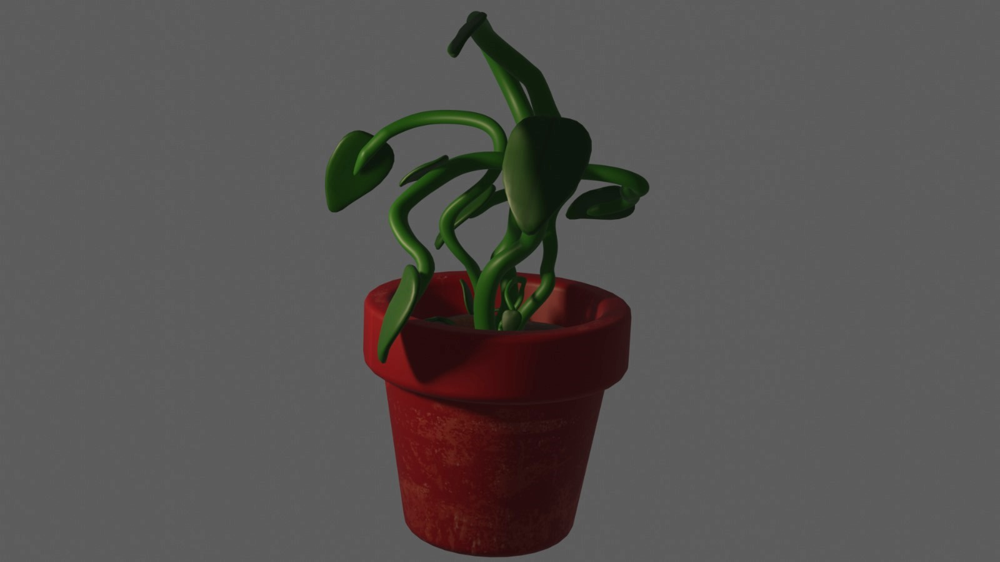
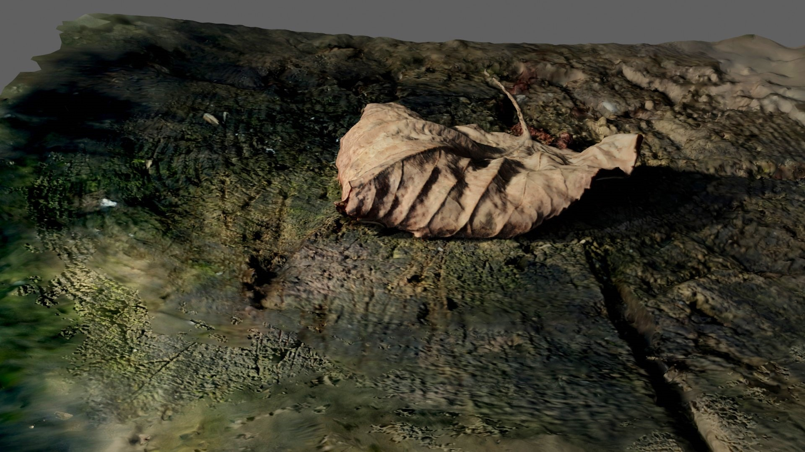
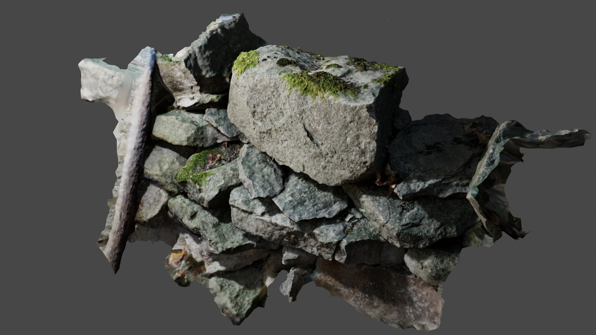
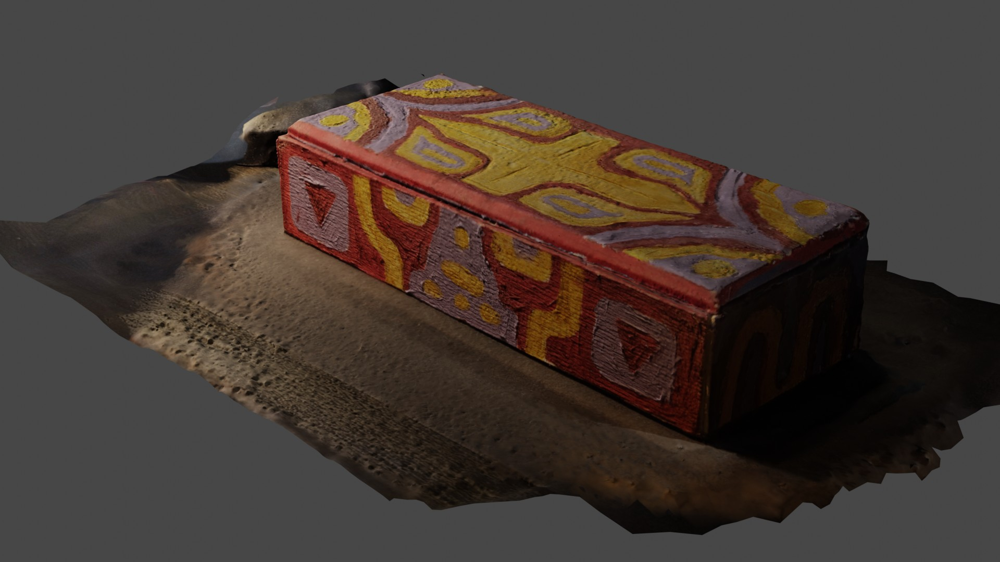
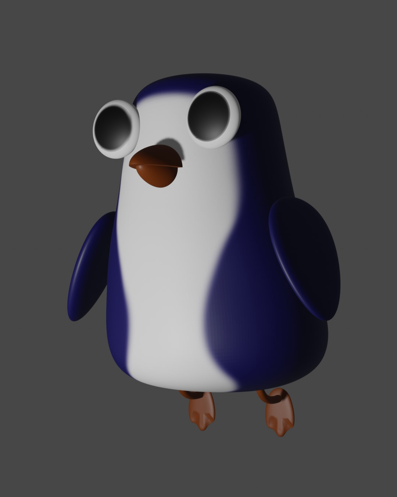
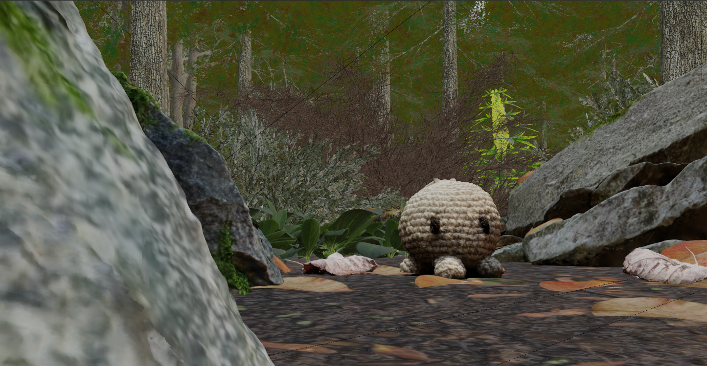
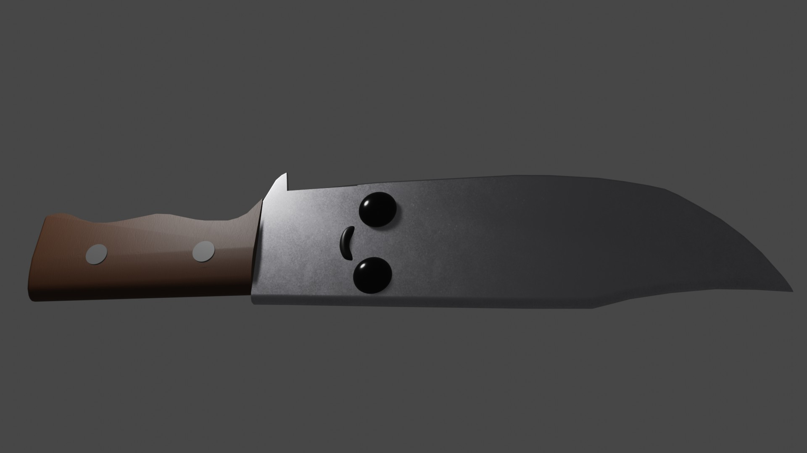
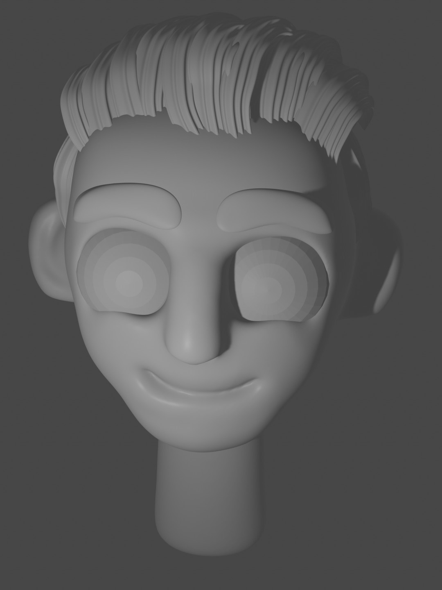
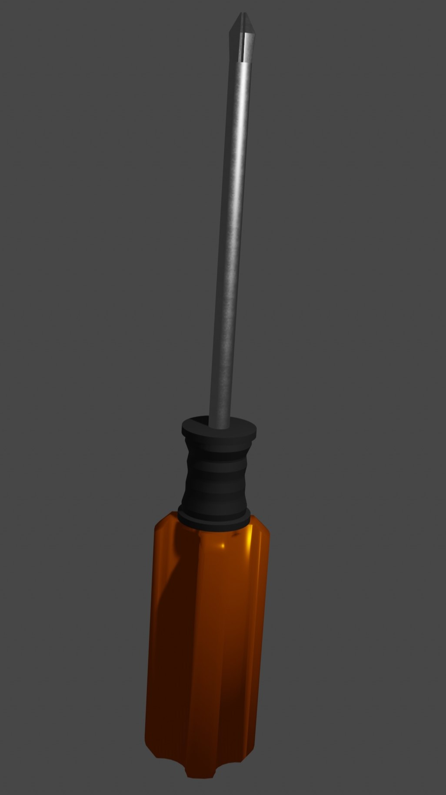
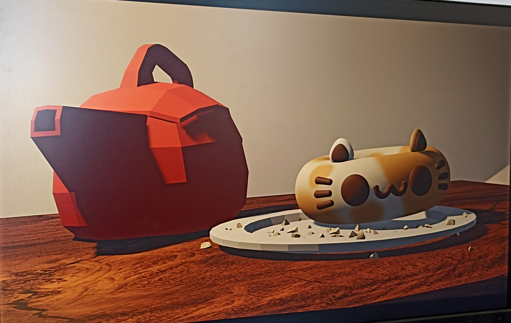

3D Modelování a render
Začal jsem modelovat v programu Blender asi před 4 lety. Za tu dobu jsem se v něm zlepšil, ale i přes to v něm nedělám natolik, abych věděl úplně všechny modifiery apod.
Už jsem v něm zkoušel dělat i rigy modelů, sculptování, textury a lehké materiály, ale ne animace nebo ostatní věci. Něco z toho znám víc a něco méně.
V minulosti jsem modeloval také v programech Maya a Autodesk.
Také mě baví Photogrammetry, pro kterou používám program KIRI Engine. Zkoušel jsem i Polycam,
ale tam jsem dosáhl horších výsledků i s použitím asi 10x více fotek.









